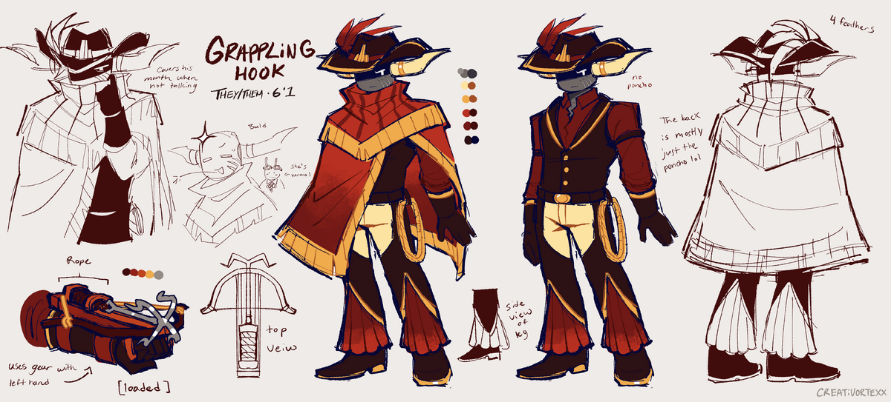
Grappling Hook is the leader of the Redcliff Wranglers, he makes an appearance in Death In The Family when Sword travels out to Lost Temple with Darkheart. Grappling Hook seems to be a beloved leader among the wranglers and it seems multiple of the wranglers owe him something. Grappling Hook is also known to be Scythe's ex, and can be seen together in some of Sodakettle's art.
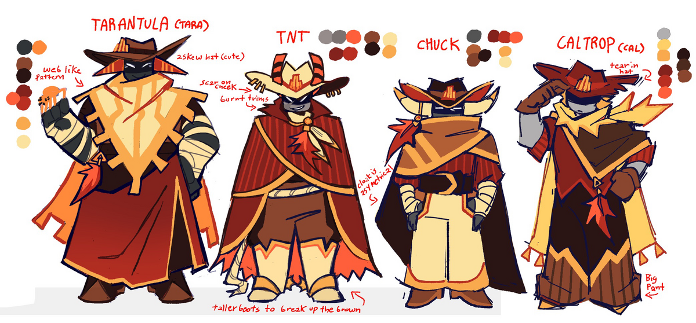
This has Taratula, TNT, Chuck, and Caltrop who you can read about below.
Tarantula makes an appearance in Death In The Family when Sword is captured by the Wranglers. Tarantula is also seen in the meeting that Sword goes to with the Wranglers, and Tarantula is also seen taking care of the Oziphranges, vulture-like birds. Tarantula also has a pet spider, whom she calls Chipper!
TNT's appearance in Death In The Family happens when Sword is at the meeting with the Wranglers. TNT is overall carefree and playful, he helps Sword transport medical supplies to one of the tents. TNT also is currently seen helping Sword get to the Church of The True Eye to find Medkit, and TNT is seen to be hesitant since Sword is young.
Chuck makes his appearance when preparing to leave to pick up the supplies dropped off by who we can only assume is Theives Den. Chuck gets caught in an explosion in the cave they travel to, and Sword helps him get better before they return to the Wranglers. Chuck also recounts a story of an Oziphrange, one they called Red Claw.
Caltrop appears with the Wranglers, and he's one of the few whose name is mentioned. He is referred to as Cal, and he has a daughter who has yet to appear in the comic and in game. She is known as Cowbell.
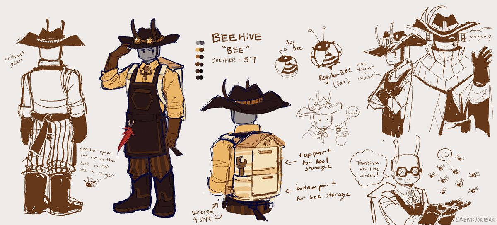
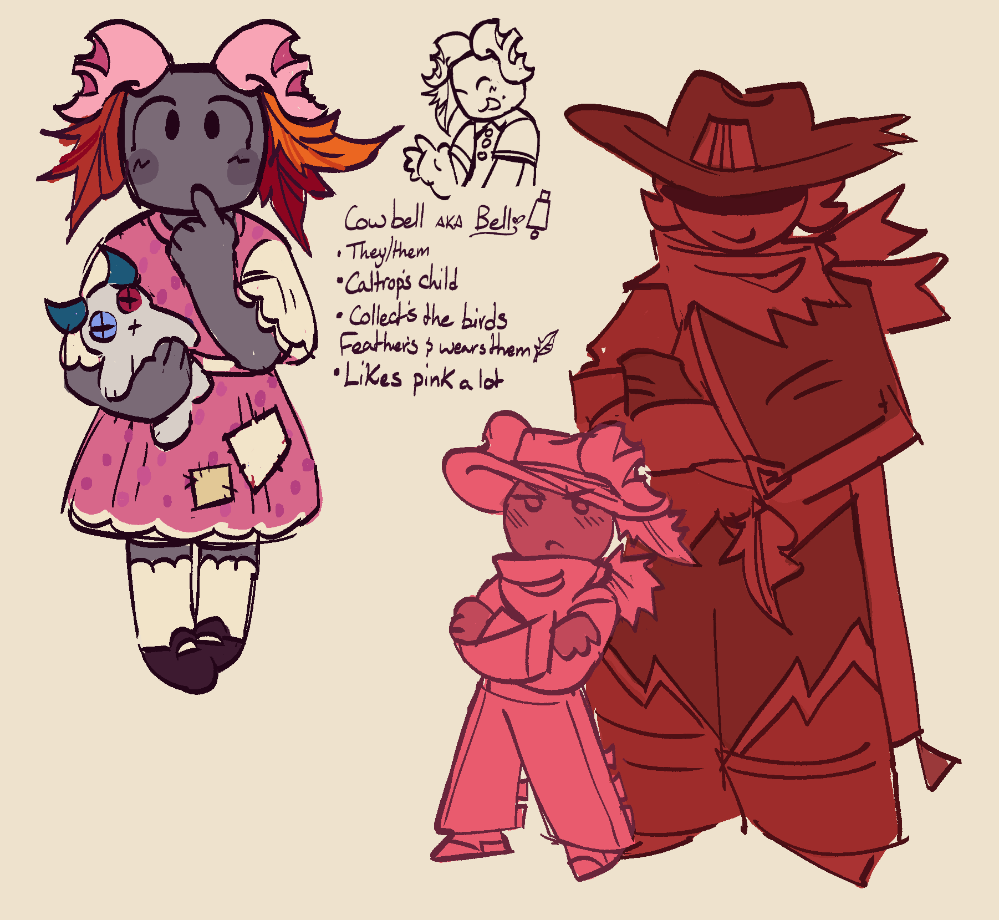
Not much is known about Cowbell other than they are Caltrop's child. It is unknown if they are a natural spawn or unnatural spawn or even what they do.
The Father Overseer makes very short appearances in Death In The Family. So far in the comic, he has two appearances. We see Father Overseer in the beginning with Broker during the call with Medkit. His second appearance occurs when Grappling Hook tells Sword the story of the Scorch. Father Overseer appeared when the Scorch occured, claiming to spawn without a gear and a promised paradise. Naturally, only on his path of enlightenment. Father Overseer is disliked by many of the Redcliff Wranglers.
Each one of them appears in game only for Sword Events. Even so, not all of them are available.
Very few of them have appeared in Death In The Family so far, but it's expected we'll see more in the upcoming campaign or in future pages.
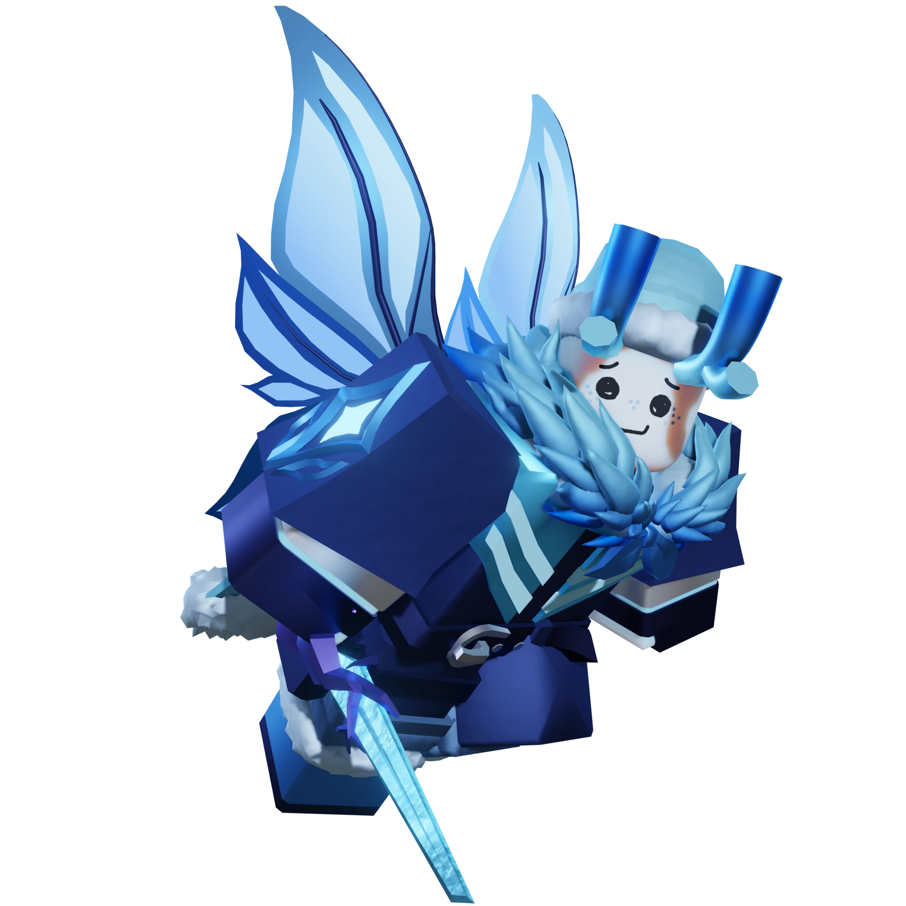
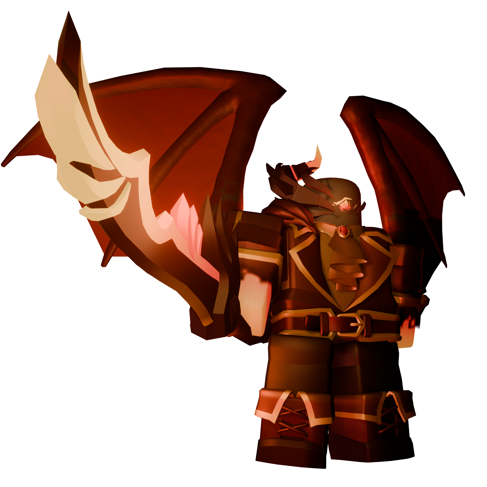
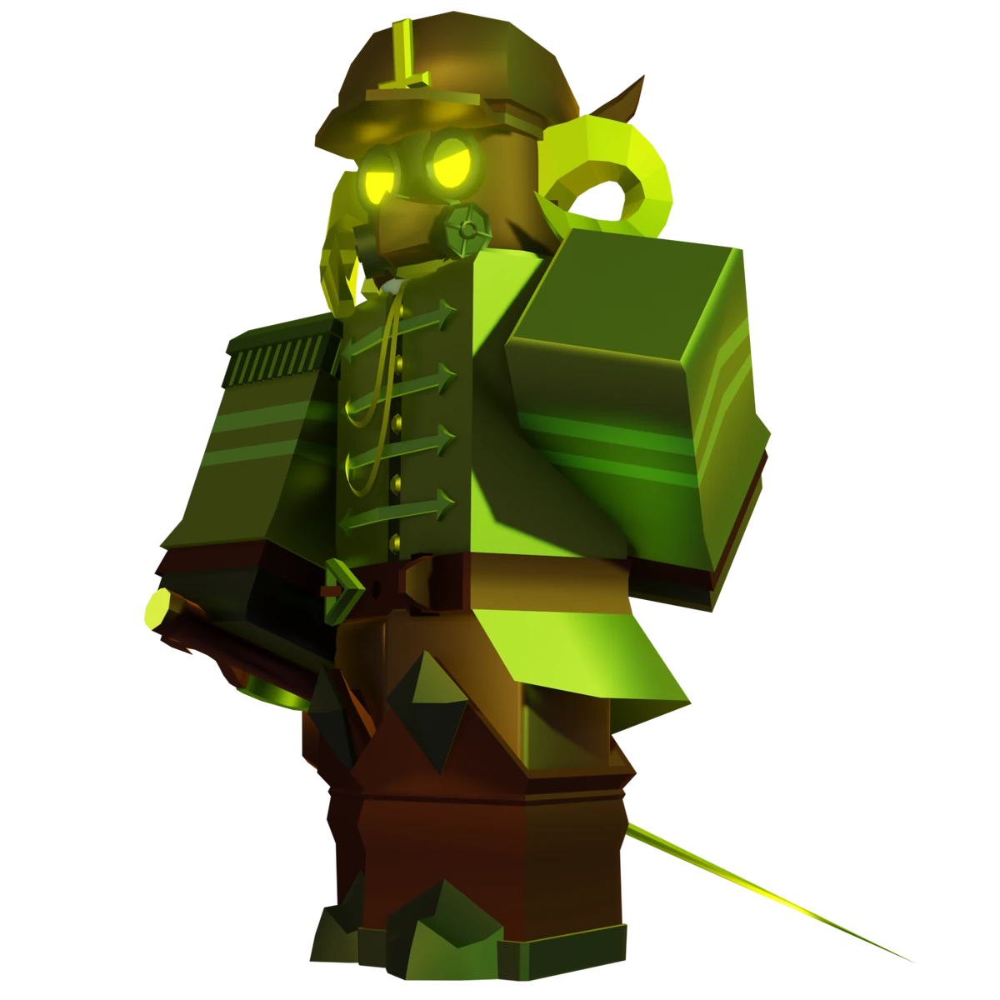
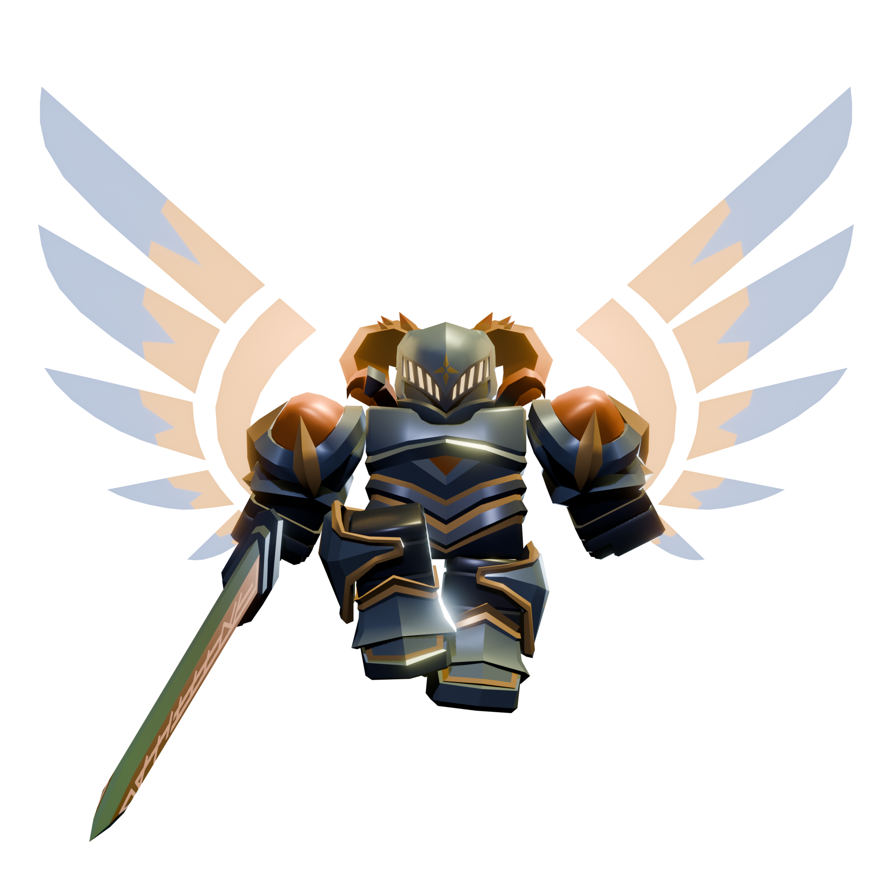
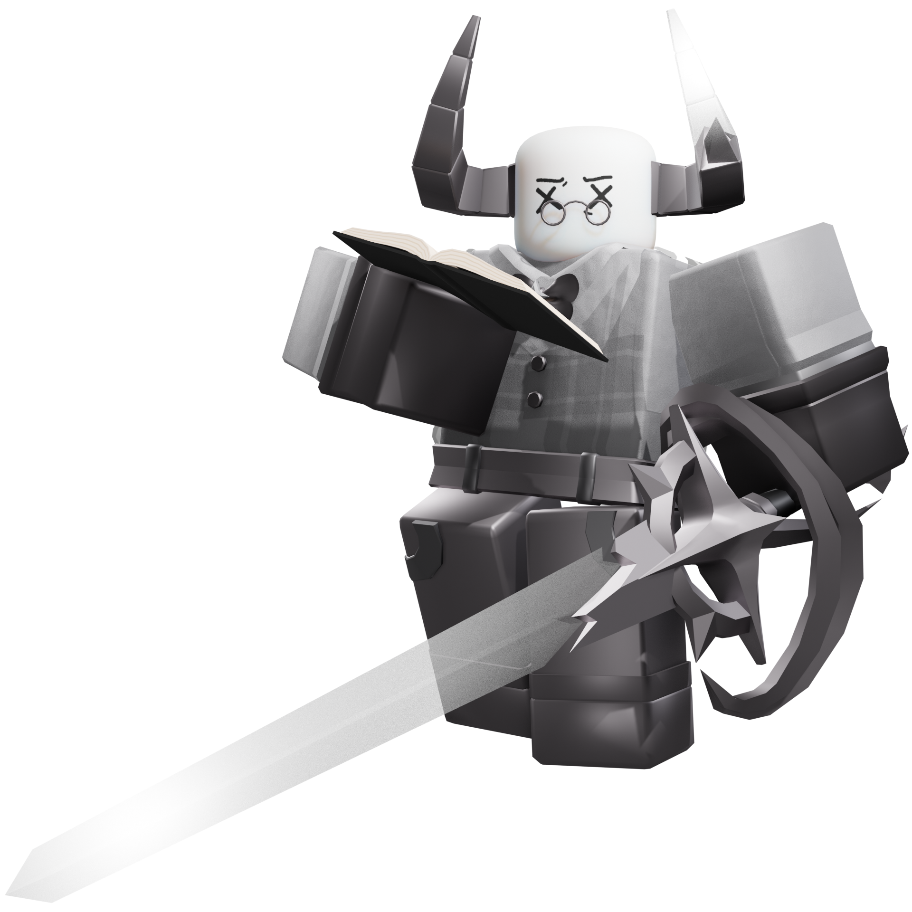
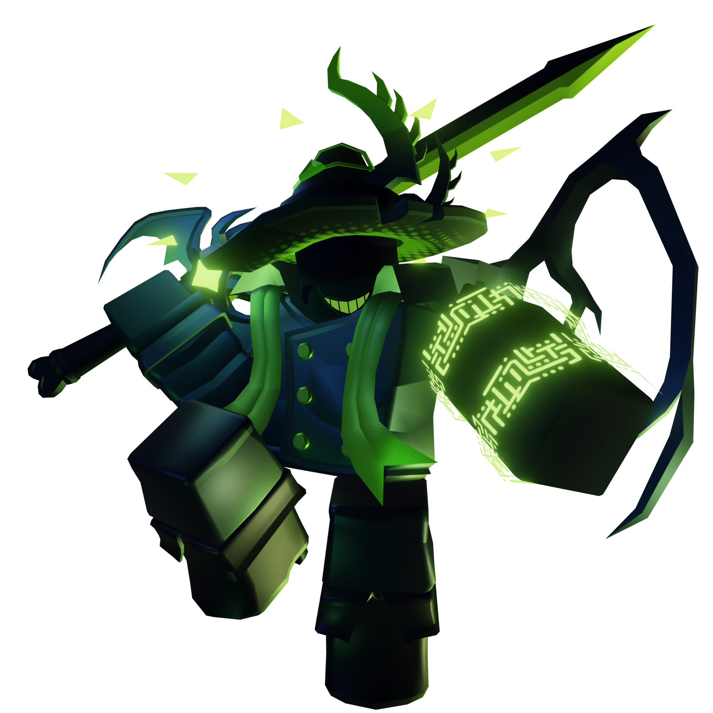
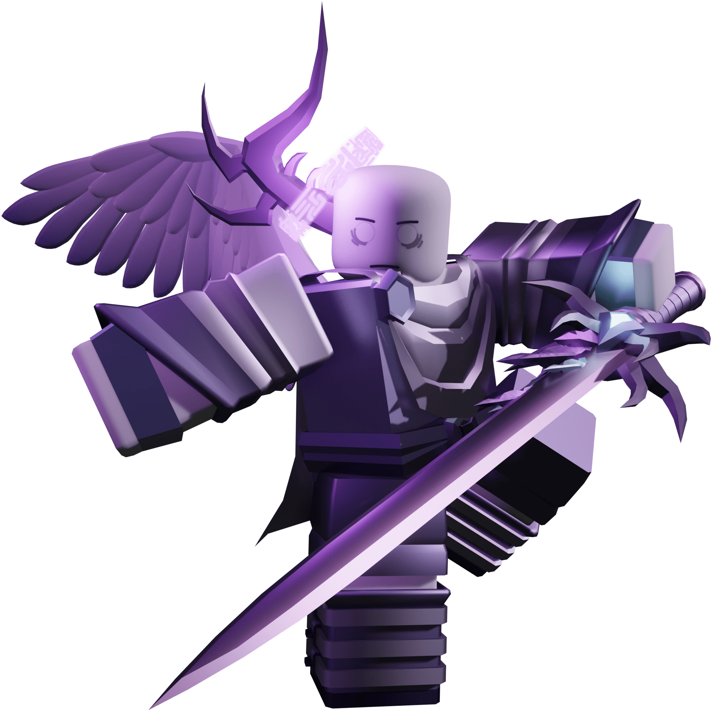